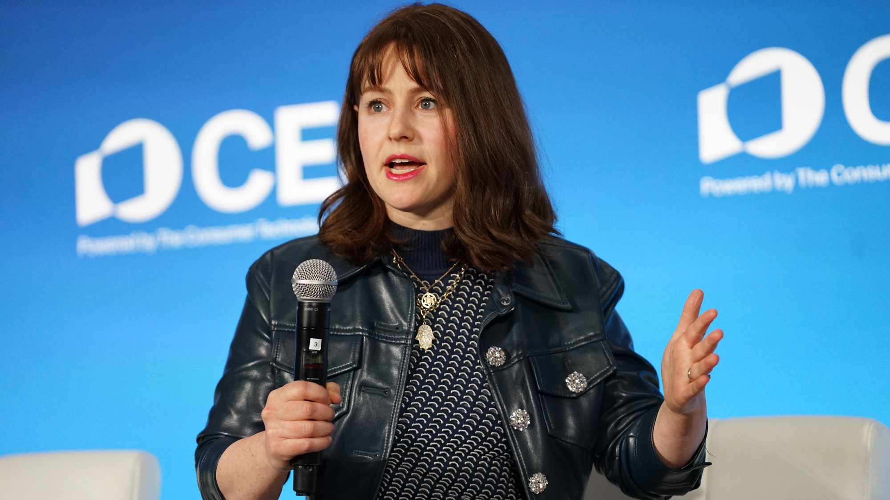
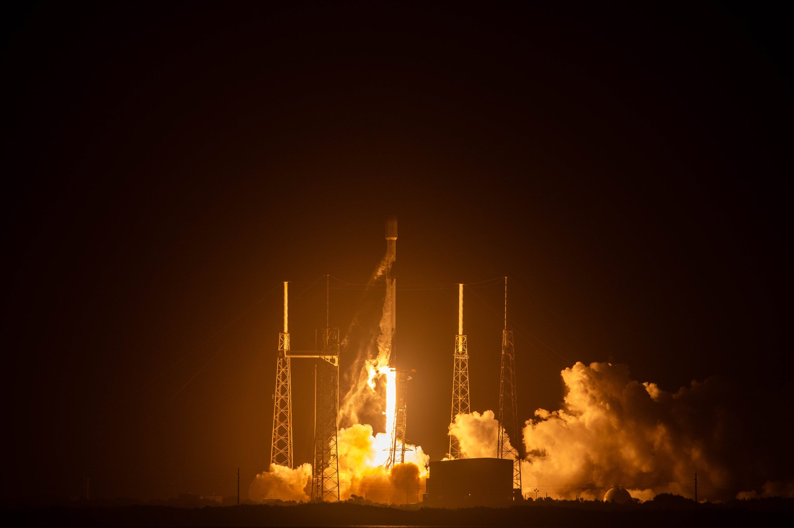

Tra il 23 e il 25 novembre 2026 SpaceX cambia le regole del gioco nella banda larga rurale statunitense. In accordo con la National Telecommunications and Information Administration (NTIA), l’agenzia del Dipartimento del Commercio che gestisce il programma federale BEAD da 42,45 miliardi di dollari, l’azienda di Hawthorne rinuncia ai contributi pubblici vinti per Starlink ma si impegna a servire comunque le abitazioni e le imprese assegnate a costo zero per lo stato. È una mossa finanziaria e regolatoria senza precedenti nel programma: toglie denaro dal tavolo per liberarsi dai controlli contabili e dalle clausole dei 56 stati e territori americani, tenendo però le stesse aree chiuse ai sussidi per i concorrenti in fibra ottica.
La rinuncia ai fondi federali e il contratto a costo zero
Il passaggio formale inizia nel pomeriggio di lunedì 23 novembre, quando la NTIA pubblica sul portale BroadbandUSA un nuovo «Model Zero Outlay Agreement» destinato agli operatori satellitari in orbita bassa (LEO) che decidono di rinunciare ai contributi del programma Broadband Equity, Access, and Deployment (BEAD) pur mantenendo gli impegni di copertura sulle località già assegnate nelle proposte finali approvate. Nelle stesse ore la notizia dell’intesa tra l’agenzia federale e SpaceX viene confermata dall’amministratrice della NTIA Arielle Roth, che parla di un accordo negoziato per accelerare l’attivazione del servizio nelle aree scoperte e far risparmiare ai contribuenti centinaia di milioni di dollari.
Martedì 24 novembre SpaceX formalizza la propria posizione con una lettera inviata agli uffici statali per la banda larga. Nel documento l’azienda ricorda di avere oltre 11.000 satelliti in orbita e più di 14 milioni di abbonati nel mondo, e scrive che «SpaceX non vuole, e non può, accettare fondi BEAD per completare un lavoro già realizzato con investimenti privati». Al posto delle sovvenzioni, la società propone a ogni stato un impegno contrattuale vincolante basato sul modello NTIA a esborso zero: stesse prestazioni tecniche e stesse opzioni di servizio previste per i beneficiari dei fondi pubblici, senza alcun esborso per lo stato o per il bilancio federale. Su X, Elon Musk rilancia il riepilogo dell’operazione con una sola parola: «Starlink».
Sul valore preciso della rinuncia circolano due ordini di grandezza compatibili tra loro. Le assegnazioni provvisorie e finali conquistate da Starlink nei bandi BEAD ammontavano complessivamente a circa 738,8 milioni di dollari su circa 476.000 località servibili (Broadband serviceable locations, BSL) distribuite in 45 tra stati e territori, il bottino più ampio ottenuto da un singolo operatore nel programma. Nelle comunicazioni raccolte tra il 23 e il 24 novembre, fonti governative indicano rispettivamente circa 738 milioni complessivi di assegnazioni e circa 636 milioni di dollari di contributi effettivamente oggetto della rinuncia immediata, anche perché alcuni stati avevano già firmato contratti tradizionali con SpaceX prima del cambio di rotta federale.
Perché SpaceX ha rifiutato le condizioni degli stati
Per capire perché un’azienda rinunci volontariamente a oltre seicento milioni di dollari di denaro pubblico bisogna tornare all’estate del 2025, quando l’amministrazione federale ha riscritto le regole del programma BEAD con la riforma «Benefit of the Bargain». Fino ad allora la legge sulle infrastrutture del 2021 dava priorità assoluta alla fibra ottica; la revisione ha reso la gara tecnologicamente neutrale e basata soprattutto sul costo per località, aprendo le porte ai satelliti in orbita bassa. Con costi di attivazione enormemente inferiori allo scavo di trincee rurali, Starlink aveva sbaragliato la concorrenza in decine di stati.
Una volta vinte le assegnazioni, però, SpaceX si è scontrata con la fase contrattuale: nel BEAD non è Washington a firmare i singoli accordi, ma ciascuno dei 56 enti statali e territoriali. Già nel gennaio 2026 la società aveva inviato alle amministrazioni statali una proposta di modifica contrattuale avvertendo che la partecipazione sarebbe diventata «insostenibile» senza deroghe specifiche. SpaceX contestava tre nodi strutturali: l’obbligo di rendicontazione finanziaria tipico dei cantieri terrestri, impossibile per un operatore verticalmente integrato che costruisce e lancia in proprio satelliti e razzi senza fatture di subappaltatori edili; la richiesta di riservare capacità dedicata sulla costellazione; e soprattutto le clausole di responsabilità in caso di inadempienza, che avrebbero esposto SpaceX a pagare il subentro di un operatore in fibra ottica molto più costoso, con un rischio «decine di volte superiore ai pagamenti ricevuti».
Nella prima metà del 2026 la NTIA aveva respinto quelle richieste, chiarendo nelle linee guida che i contratti statali non potevano alterare le regole generali del programma, mentre diversi parlamentari democratici avevano chiesto ad Arielle Roth di non concedere trattamenti di favore. Da lì, nei mesi successivi, alcuni stati avevano comunque chiuso accordi con SpaceX, ma la maggior parte delle trattative era rimasta impantanata in un mosaico di clausole locali, lettere di credito, polizze assicurative e controlli amministrativi diversi da stato a stato. La soluzione individuata a novembre aggira il problema alla radice: se SpaceX non incassa un dollaro di denaro pubblico, non è giuridicamente né un «subgrantee» né un destinatario di fondi federali ai sensi del codice 2 C.F.R. 200.1.

Cosa prevede davvero il Model Zero Outlay Agreement
Il testo ufficiale del contratto modello pubblicato da BroadbandUSA il 23 novembre chiarisce punto per punto lo scambio tra obblighi tecnici mantenuti e tutele regolatorie ottenute dall’operatore. Sul fronte dell’utente finale, SpaceX mantiene gli standard di servizio del BEAD: almeno 100 megabit al secondo in download e 20 megabit al secondo in upload, latenza inferiore o uguale a 100 millisecondi in almeno il 95% delle misurazioni e interruzioni medie di rete non superiori a 48 ore nell’arco di 365 giorni, escluse le cause di forza maggiore. L’operatore deve certificare la disponibilità del servizio entro quattro anni dalla firma e da quel momento decorre un periodo di obblighi contrattuali di dieci anni.
Per chi abita o lavora in una delle località incluse nell’allegato del contratto, SpaceX si impegna ad attivare il collegamento entro dieci giorni lavorativi dalla richiesta e a fornire gratuitamente tutto l’apparato d’utente necessario (antenna, router Wi-Fi, alimentatore e cavi), lasciando a carico del cliente solo le spese di spedizione standard e l’abbonamento mensile. Resta inoltre l’obbligo di offrire un’opzione tariffaria a basso costo (Low-Cost Service Option, LCSO) almeno alle famiglie idonee al programma federale Lifeline, oltre a condurre campagne informative pubbliche e a inviare due rapporti semestrali all’anno, entro il 30 gennaio e il 30 luglio, corredati dai test di prestazione previsti dal programma.
Sul fronte opposto, le concessioni garantite dall’articolo 2 all’articolo 10 del modello sono altrettanto nette. Perché non riceve né fondi BEAD né altri sussidi federali sulle aree coperte (incluso il divieto di attingere all’Universal Service Fund per quelle stesse località), il fornitore è esentato da qualsiasi revisione contabile, ispezione in sito, verifica sui costi, sui margini, sulla catena di fornitura, sul personale o sull’architettura di rete. Non deve presentare lettere di credito, fideiussioni o polizze assicurative, né rispondere a rapporti ambientali NEPA o norme su compensi esecutivi. L’articolo 7.2 blinda inoltre l’operatore sul piano politico: per tutta la durata dell’accordo, l’ente statale si impegna a non applicare al fornitore né regole sui prezzi al dettaglio o all’ingrosso, né norme statali di net neutrality o open access ovunque operi nello stato. E se anche in futuro il servizio non dovesse rispettare gli standard promessi, l’unico rimedio concesso allo stato dall’articolo 9 è la «reversion», cioè la restituzione di quelle località all’elenco delle aree idonee a un nuovo bando BEAD: nessuna multa, nessun risarcimento danni, nessuna penale.
| Aspetto | Subgrant BEAD ordinario | Model Zero Outlay Agreement (NTIA) |
|---|---|---|
| Fondi pubblici | Sovvenzione federale assegnata per località | 0 dollari (nessun contributo federale o statale, niente USF sulle stesse BSL) |
| Velocità e latenza | Almeno 100/20 Mbps, latenza ≤ 100 ms al 95% | Identiche: 100/20 Mbps, latenza ≤ 100 ms al 95%, blackout ≤ 48 ore/anno |
| Kit e attivazione | Copertura entro 4 anni, avvio servizio regolare | Certificazione entro 4 anni, poi 10 anni d’obbligo; CPE gratuita salvo spedizione |
| Audit e garanzie | Audit finanziari, lettere di credito, assicurazioni | Solo test PMPN e 2 report l’anno; nessuna lettera di credito né audit contabile |
| Regole statali | Possibili requisiti contrattuali aggiuntivi | Divieto di regolazione tariffe, net neutrality statale o open access (Term 50) |
| Inadempienza | Penali, escussione garanzie, restituzione fondi | Unico rimedio: rimozione delle località (reversion), zero multe o danni |

La trappola per gli stati e l’allarme degli operatori in fibra
Il nodo più controverso dell’intesa riguarda l’articolo 7.3 e le condizioni poste agli stati che dovessero rifiutare il nuovo schema. Finché una località resta elencata nell’accordo a costo zero, risulta ufficialmente «servita» a 100/20 Mbps: di fatto viene sottratta a qualsiasi altro finanziamento federale o statale BEAD, impedendo ai concorrenti terrestri in fibra ottica o fixed wireless access di ottenere sussidi pubblici per cablare quelle stesse case rurali. La NTIA precisa che il modello a costo zero è aperto anche ad altri operatori satellitari in orbita bassa (il riferimento implicito è ad Amazon Leo, l’altro vincitore multi-stato), ma finora non risultano segnali che Amazon voglia rinunciare ai propri contributi.
Agli uffici statali per la banda larga la NTIA ha messo davanti un bivio stretto già nella riunione di lunedì 23 novembre: adottare il contratto modello a costo zero con SpaceX oppure respingerlo e individuare un operatore alternativo per le medesime località. Ma c’è un vincolo decisivo: chi rifiuta l’accordo deve comunque trovare un sostituto a un «costo comparabile» rispetto a quello approvato nella proposta finale originaria dello stato. Poiché le offerte di Starlink erano state di gran lunga le più basse dell’intero programma, per la maggior parte degli stati è praticamente impossibile finanziare reti in fibra ottica entro quel tetto di spesa.
È esattamente il punto attaccato il 24 novembre dalla Fiber Broadband Association. Il presidente e amministratore delegato Gary Bolton ha dichiarato che l’accordo «mina l’obiettivo del programma BEAD» fissato dal Congresso, perché rischia di legare le comunità rurali fino a quattordici anni (quattro per la certificazione più dieci di servizio) a un unico operatore con strumenti di responsabilità molto limitati, rendendo irrealistica la ricerca di alternative al prezzo iniziale di Starlink. L’associazione chiede invece alla NTIA di consentire agli stati di riaprire quelle aree alla concorrenza nel nuovo ciclo di bandi previsto per impiegare i circa 21 miliardi di dollari avanzati nel fondo BEAD dopo la riforma del 2025.
Anche le amministrazioni statali sono state colte di sorpresa. La direttrice dell’ufficio banda larga del Minnesota, Bree Maki, ha confermato che i responsabili statali hanno ricevuto il testo definitivo del modello soltanto nella notte tra lunedì e martedì dopo un webinar convocato dalla NTIA, senza aver ancora avuto contatti diretti con SpaceX, e che i legali di ogni stato dovranno ora verificare la compatibilità dello schema con le leggi locali. Resta inoltre aperto il capitolo degli stati che avevano già firmato un contratto tradizionale con SpaceX, come l’Indiana: funzionari federali hanno lasciato intendere che quegli accordi precedenti non sono più sul tavolo, ma il percorso giuridico per sostituirli o risolverli è ancora da chiarire.
Fonti pubbliche e tracce
- NTIA / BroadbandUSA, 23 novembre 2026: pagina ufficiale «BEAD Model Agreement to Accelerate Broadband Deployment» (pubblicata alle 17:00 del 23 novembre) con le regole per gli stati e il link al contratto.
- NTIA, Model Zero Outlay Agreement (PDF ufficiale, novembre 2026): testo integrale degli articoli 1–13 (zero fondi, requisiti 100/20 Mbps e latenza ≤ 100 ms al 95%, durata 10 anni, CPE gratuita salvo spedizione, LCSO, esenzioni da audit e garanzie, Term 50 su tariffe e net neutrality, reversion come rimedio esclusivo).
- Broadband Breakfast, Jake Neenan, 23 novembre 2026: retroscena sul confronto NTIA–SpaceX, cifra di circa 738 milioni di dollari, dichiarazione ufficiale dell’amministratrice Arielle Roth, contesto sul rider di gennaio 2026 e reazioni di funzionari statali.
- Telecompetitor, Ian Doescher, 24 novembre 2026: sintesi delle stime dell’amministrazione (circa 636 milioni di dollari), copertura temporale (4 anni + 10 anni), assenza di lettere di credito e divieto di accedere a fondi USF.
- Fierce Network, Linda Hardesty, 24 novembre 2026: dichiarazioni di Gary Bolton (Fiber Broadband Association) e di Bree Maki (Minnesota Office of Broadband Development); dati sui 21 miliardi di dollari residui nel programma BEAD.
- Light Reading, Nicole Ferraro, 24 novembre 2026: critica della Fiber Broadband Association sul vincolo fino a 14 anni e sul blocco dei bandi alternativi.
- Communications Daily, 24–25 novembre 2026: testo della lettera inviata da SpaceX agli uffici statali il 24 novembre (oltre 11.000 satelliti in orbita e oltre 14 milioni di abbonati globali).
- Teslarati, 25 novembre 2026: riepilogo dell’iniziativa, rilancio di Elon Musk su X e confronto tra le stime da 636 e 738 milioni di dollari; riferimenti storici alle assegnazioni BEAD (476.000 località per 738,8 milioni nelle proposte finali, 472.604 per 733,5 milioni nei dati di aprile).
Fotografie utilizzabili
Tutte e quattro le immagini sono a licenza libera su Wikimedia Commons: terminale Starlink in CC BY-SA 4.0 (BugWarp), Dipartimento del Commercio USA in CC BY 2.0 (Tony Webster), Arielle Roth al CES 2026 in CC BY-SA 4.0 (Xuthoria) e lancio Falcon 9 Starlink della U.S. Space Force in pubblico dominio. Nessuna immagine editoriale a uso ristretto e nessuna immagine d’archivio redazionale. Dettagli completi nella scheda dei crediti fotografici.
Apri il dossier NROL-136 archiviato · Archivio Notizie · Torna a SpaceX